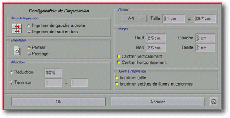
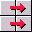
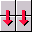
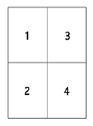

<!-- Documentation XQuad (c)1995-2000 AXENE contact axene@axene.org>
<html>

<head>
<title>Configuration de l'impression</title>
</head>

<body BGCOLOR="#FFFFFF" BACKGROUND="Images/back.gif" TEXT="#000000">

<p ALIGN="right">  </p>

<p><br>
<br>
La boîte de dialogue 'Configuration de l'impression' permet de choisir la mise en page de
la feuille de calcul en vue de son impression. <br>
<br>
</p>

<hr>

<p align="center"><br>
 <br>
<small><i>Photo d'écran : Boîte de configuration de l'impression </i></small></p>

<p><br>
</p>

<hr>

<p><br>
</p>

<h3>Partie gauche de la boîte de dialogue&nbsp;:</h3>

<ul>
  <li><p align="center"> <a NAME="button_left_to_right">le
    bouton poussoir </a><i>&quot;Imprimer de gauche à droite&quot;</i> permet de <b>choisir
    l'ordre d'impression d'un tableau tenant sur plusieurs pages</b>. Avec un tableau tenant
    sur 2 pages x 2 pages, les pages seront imprimées dans l'ordre suivant&nbsp;:<br>
     </p>
  </li>
  <li><p align="center"> <a NAME="button_up_to_down">le
    bouton poussoir </a><i>&quot;Imprimer de haut en bas&quot;</i> permet de <b>choisir
    l'ordre d'impression d'un tableau tenant sur plusieurs pages</b>. Avec un tableau tenant
    sur 2 pages x 2 pages, les pages seront imprimées dans l'ordre suivant&nbsp;:<br>
     </p>
  </li>
  <li> <a NAME="button_portrait">le bouton poussoir </a><i>&quot;Portrait&quot;</i>
    permet de <b>choisir l'orientation des pages</b> à l'impression. La plus grande dimension
    de la page correspondra à la hauteur et la plus petite dimension à la largeur. <br>
    &nbsp; </li>
  <li> <a NAME="button_landscape">le bouton poussoir </a><i>&quot;Paysage&quot;</i>
    permet de <b>choisir l'orientation des pages</b> à l'impression. La plus petite dimension
    de la page correspondra à la hauteur et la plus grande dimension à la largeur. <br>
    &nbsp; </li>
  <li><a NAME="button_reduction">le bouton poussoir </a><i>&quot;Réduction&quot;</i> permet
    d'<b>autoriser l'introduction d'un facteur de réduction </b>à appliquer au tableau avant
    son impression. La valeur est exprimée en pourcentage et doit être comprise entre 0.1(%)
    et 1000(%). Une valeur de 10% correspond à une réduction par un facteur 10. A contrario,
    une valeur de 1000% correspond à un agrandissement par un facteur 10. <br>
    &nbsp; </li>
  <li><a NAME="button_constraint">le bouton poussoir </a><i>&quot;Tenir sur&quot;</i> permet
    de <b>choisir sur combien de page le tableau sera imprimé</b>. Lorsque ce bouton est
    enfoncé, il est possible de spécifier sur combien de page en horizontal (champ texte de
    gauche) et en vertical (champ texte de droite), le tableau sera imprimé. Les deux valeurs
    sont exprimées en nombre de page et doivent être comprises entre 1 et 100. Cette
    fonction calcule automatiquement le facteur de réduction (ou d'agrandissement) en
    horizontal et en vertical afin d'obéir aux contraintes. </li>
</ul>

<p><br>
</p>

<h3>Partie droite de la boîte de dialogue&nbsp;:</h3>

<ul>
  <li><a NAME="section_format">la section </a><i>&quot;Format&quot;</i> permet de <b>définir
    la largeur et la longueur des pages</b> à imprimer. Ces deux valeurs sont exprimées en
    centimètres et doivent être comprises entre 1(cm) et 300(cm). <br>
    &nbsp; </li>
  <li><a NAME="section_margins">les champs textes </a><i>&quot;Haut&quot;</i>, <i>&quot;Bas&quot;</i>,
    <i>&quot;Gauche&quot;</i> et <i>&quot;Droite&quot;</i> de la section <i>&quot;Marges&quot;</i>
    permettent de <b>spécifier les dimensions des marges</b> respectivement du haut, du bas,
    de gauche et de droite de la page. Les marges sont des espaces non imprimables aux bords
    des pages. Les valeurs sont exprimées en centimètres et doivent être comprises entre
    0(cm) et 150(cm). <br>
    &nbsp; </li>
  <li><a NAME="button_center_verticaly">le bouton poussoir </a><i>&quot;Centrer
    verticalement&quot;</i> permet de <b>spécifier que la zone du tableau imprimé dans
    chaque page sera centrée verticalement</b> dans l'espace laissé entre la marge du haut
    et celle du bas. <br>
    &nbsp; </li>
  <li><a NAME="button_center_horizontaly">le bouton poussoir </a><i>&quot;Centrer
    horizontalement&quot;</i> permet de <b>spécifier que le morceau du tableau imprimé dans
    chaque page sera centré horizontalement</b> dans l'espace laissé entre la marge de
    gauche et celle de droite. <br>
    &nbsp; </li>
  <li><a NAME="button_print_grid">le bouton poussoir </a><i>&quot;Imprimer la grille&quot;</i>
    permet de <b>spécifier que la grille sera imprimée sur chaque page</b>. La grille est
    représentée par une ligne très fine pour marquer la séparation des lignes et des
    colonnes. <br>
    &nbsp; </li>
  <li><a NAME="button_print_headers">le bouton poussoir </a><i>&quot;Imprimer en-têtes de
    lignes et de colonnes&quot;</i> permet <b>d'indiquer si l'on veut voir apparaître les
    en-têtes de lignes et de colonne à l'impression</b>. Les en-têtes de colonnes
    apparaissent en haut de la page sous forme de rectangles avec une suite de lettre comme
    coordonnée. Les en-têtes de lignes apparaissent à gauche de la page sous forme de
    rectangles avec une suite de chiffres comme coordonnée. </li>
</ul>

<p><br>
</p>

<h3>Partie inférieure de la boîte de dialogue&nbsp;:</h3>

<ul>
  <li><a NAME="button_ok"><i>&quot;Ok&quot;</i> ferme la boîte et <b>accepte toutes les
    modifications apportées à la mise en page</b> de la feuille de calcul pour l'impression.
    Accepter les modifications de la mise en page active automatiquement </a>l'<a href="Menu_View.html#page_separators_menu_entry">affichage des séparateurs de page</a>. <br>
    &nbsp; </li>
  <li><a NAME="button_cancel"><i>&quot;Annuler&quot;</i> ferme la boîte et <b>annule toutes
    les modifications apportées à la mise en page</b> pour l'impression. </a></li>
</ul>

<p><br>
</p>

<hr>

<p ALIGN="right"></p>
</body>
</html>
